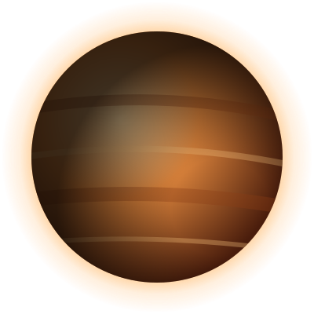

REG-001
Planeta 1
● Datos verificadosDescripción breve del planeta: cómo es a primera vista, qué se cuenta de él en los puertos espaciales y por qué los aventureros acaban allí.
- Política
- Por definir
- Gobierno
- Por definir
- Temperatura
- Por definir
- Clima
- Por definir
- Gravedad
- Por definir
- Población
- Por definir
- Especies
- Por definir
- Idioma
- Por definir
Nivel de peligro